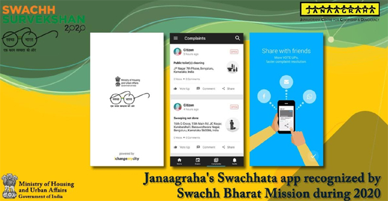
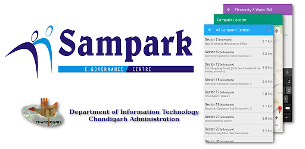
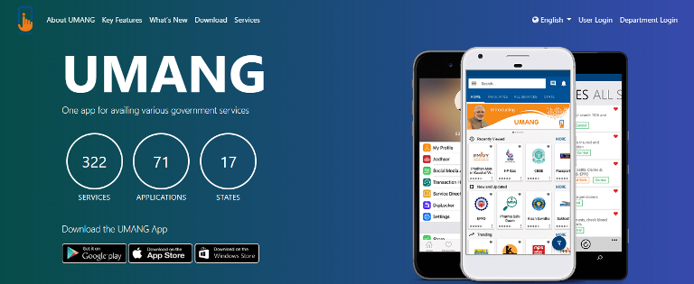
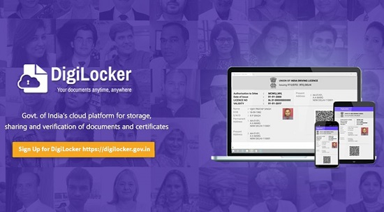

Some of the facilities which will be provided through this initiative are Bharat net, digital locker, e-education, e-health, e-sign, e-shopping and national scholarship portal. As part of Digital India, Indian Government planned to launch Botnet cleaning centers. Facilities to digitally empower citizens :
1. Swachh Bharat Mission (SBM), or Clean India Mission is a country-wide campaign initiated by the Government of India in 2014 to eliminate open defecation and improve solid waste management. Phase 1 of the mission lasted till October 2019. Phase 2 will be implemented between 2020–21 and 2024-25.Initiated by the Government of India, the mission aimed to achieve an "open-defecation free" India by 2 October 2019.
2. e-Sampark Vernacular email service: Out of 10% English speaking Indians, only 2% reside in rural areas. Rest everyone depends on their vernacular language for all living their lives. However, as of now, email addresses can only be created in the English language. To connect rural India with Digital India, the Government of India impelled email services provider giants including Gmail, office, and Rediff to provide the email address in regional languages.
3. UMANG (Unified Mobile Application for New-age Governance) is a Government of India all-in-one single unified secure multi-channel multi-platform multi-lingual multi-service freeware mobile app for accessing over 1,200 central and state government services in multiple Indian languages.
4.DigiLocker is an Indian Digitization online service provided by Ministry of Electronics and Information Technology (MeitY), Government of India under its Digital India initiative. DigiLocker provides an account in cloud to every Aadhaar holder to access authentic documents/certificates such as driving license, vehicle registration, academic mark sheet in digital format from the original issuers of these certificates. It also provides 1GB storage space to each account to upload scanned copies of legacy documents.
